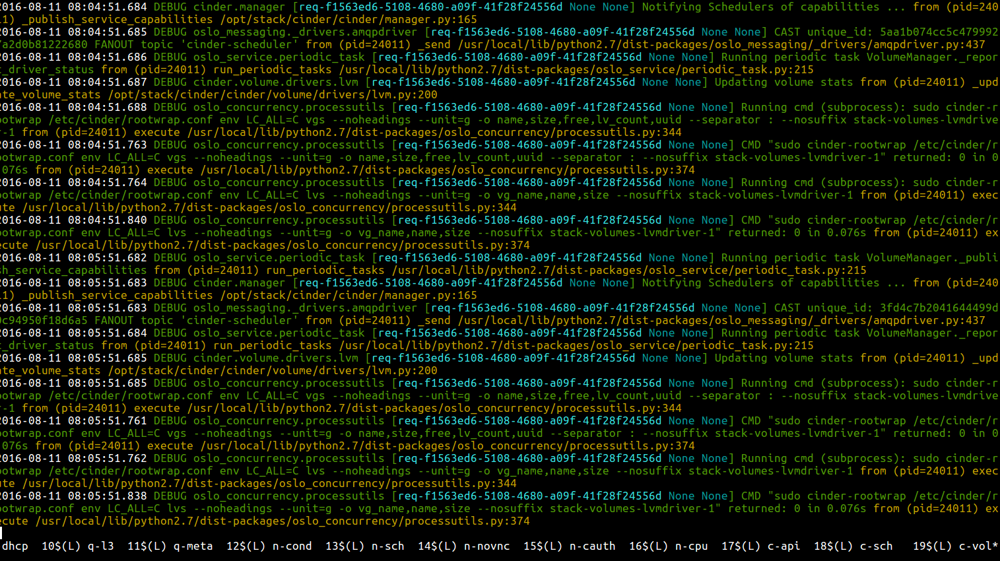

Now that you have your nifty DevStack up and running, what can you do with it?
By default most services in DevStack are running in a screen session.
os3:~> screen -list
There is a screen on:
28994.stack (08/10/2016 09:01:33 PM) (Detached)
1 Socket in /var/run/screen/S-sdague.
You can attach to this screen session using screen -r which gives you a view of the services in action.
The following minimal commands will be useful to using screen:
For more about using screen, see the excellent screen manual.
If you want to make a quick change to a running service the easiest way to do this is:
This works for services, except those running under Apache (currently just keystone by default).
Warning
All changes you are making are in checked out git trees that DevStack thinks it has full control over. Uncommitted work, or work committed to the master branch, may be overwritten during subsequent DevStack runs.
When testing a larger set of patches, or patches that will impact more than one service within a project, it is often less confusing to use custom git locations, and make all your changes in a dedicated git tree.
In your local.conf you can add **_REPO, **_BRANCH for most projects to use a custom git tree instead of the default upstream ones.
For instance:
[[local|localrc]]
NOVA_REPO=/home/sdague/nova
NOVA_BRANCH=fold_disk_config
Will use a custom git tree and branch when doing any devstack operations, such as stack.sh.
When testing complicated changes committing to these trees, then doing ./unstack.sh && ./stack.sh is often a valuable way to iterate. This does take longer per iteration than direct patching, as the whole devstack needs to rebuild.
You can use this same approach to test patches that are up for review in gerrit by using the ref name that gerrit assigns to each change.
[[local|localrc]]
NOVA_BRANCH=refs/changes/10/353710/1
When testing changes to Apache based services, such as keystone, you can either use the Testing a Patch Series approach above, or make changes in the code tree and issue an apache restart.
When testing changes to libraries consumed by OpenStack services (such as oslo or any of the python-fooclient libraries) things are a little more complicated. By default we only test with released versions of these libraries that are on pypi.
You must first override this with the setting LIBS_FROM_GIT. This will enable your DevStack with the git version of that library instead of the released version.
After that point you can also specify **_REPO, **_BRANCH to use your changes instead of just upstream master.
[[local|localrc]]
LIBS_FROM_GIT=oslo.policy
OSLOPOLICY_REPO=/home/sdague/oslo.policy
OSLOPOLICY_BRANCH=better_exception
Because libraries are used by many services, library changes really need to go through a full ./unstack.sh && ./stack.sh to see your changes in action.
To figure out the repo / branch names for every library that’s supported, you’ll need to read the devstack source.